Project 3: Flow Matching
Part A
1.1 Constructing Noisy Training Inputs
I chose an image of a bowl of clam chowder I had recently at Sourdough & Co. I construct a noisy training input by sampling Gaussian noise and interpolating with the clean image. We take one Gaussian noise tensor ε and interpolate at t = 0.25, 0.5, and 0.75.
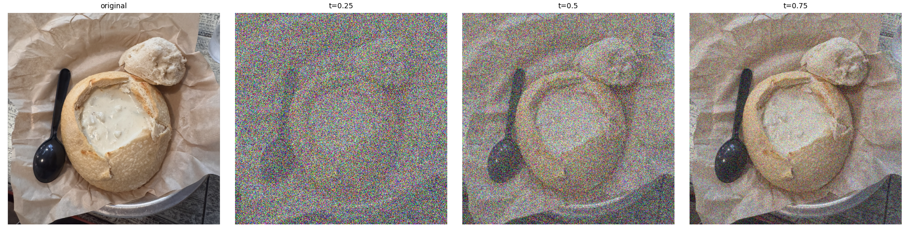
1.2 Classical Denoising
Then, in 1.2, we pass various low-pass filters over the image and choose the one that removes the most noise in comparing the sum of squared differences with the original image. Results are below; as the amount of noise decreases, the standard deviation of the best Gaussian filter also decreases.
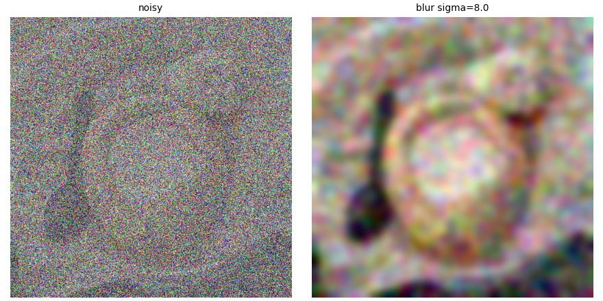
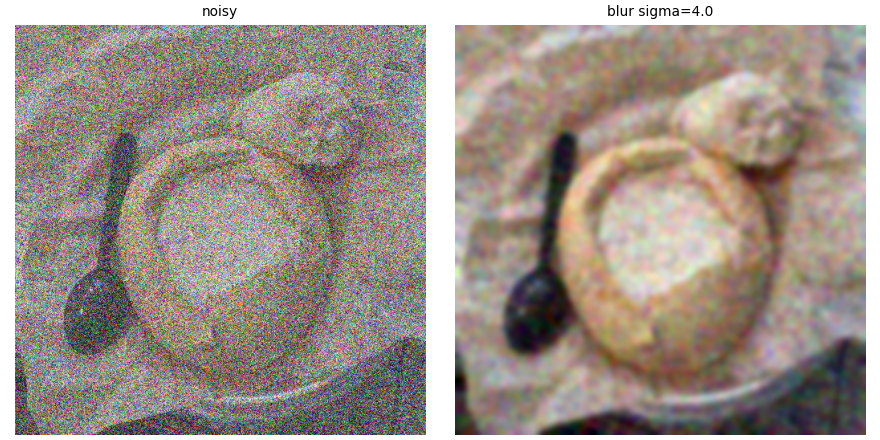
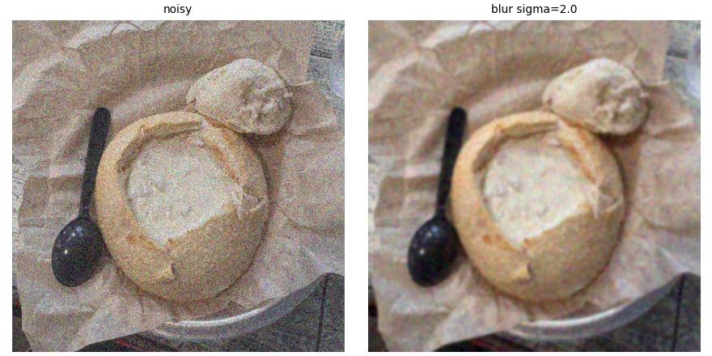
1.3 One-Step Denoising
In 1.3, we implement one_step_denoise by adding the image at timestep t with (1−t) times the predicted velocity. We see the image becomes more realistic and closer to ground truth when the proportion of noise decreases.
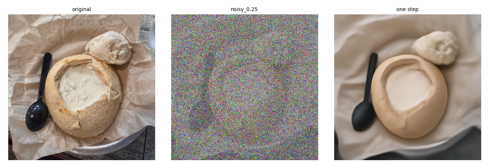
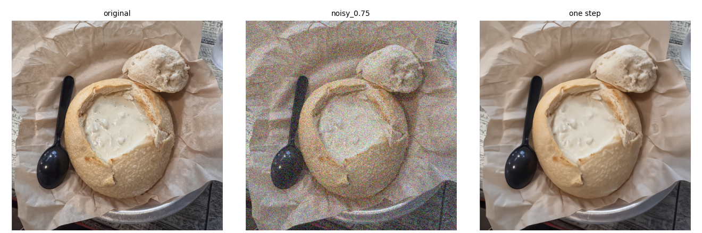
1.4 Visualizing Velocity
In 1.4, we visualize “what the model adds” by comparing the predicted model output with the ground truth velocity, and plotting the RMS difference across RGB at each pixel. To make the errors visible, I chose to clip the vmax at 0.3, despite the maximum error being 2 in the most noisy case. We generally see the per-pixel error decrease as the image contains less noise, with it most concentrated at edges and details.
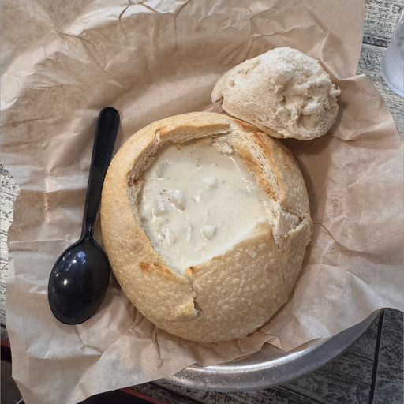
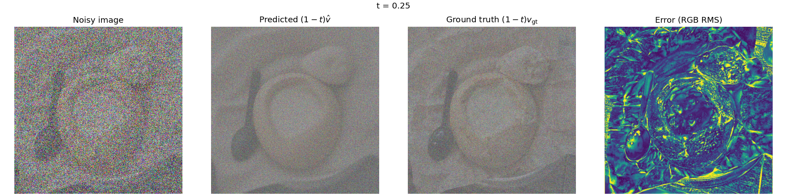
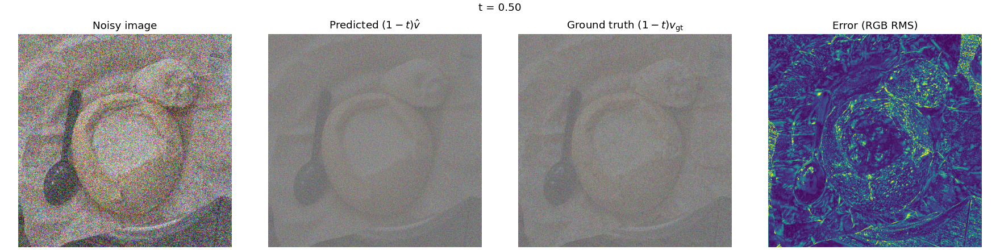
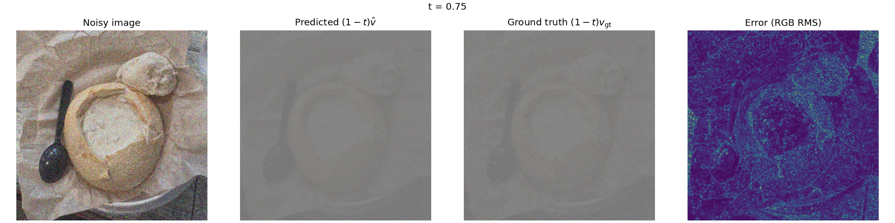
1.5 Iterative Denoising with Euler Sampling
In 1.5, I implement euler_sample. Here, I ran into floating point errors (where, despite a step size of 0.02, my last timestep would be something like 1.000004). To make the function more robust, I thus computed a “dt” as the minimum of my step size and what’s left over to get to 1 (1−t), and then used dt instead of step_size throughout. In each step, to get to image at timestep t+h, we take the image at timestep t and add the predicted velocity, scaled by dt. We visualize trajectories below. The final result is much better; our image is more realistic and closer to ground truth than in the one-step denoising, and much clearer than the Gaussian blur.
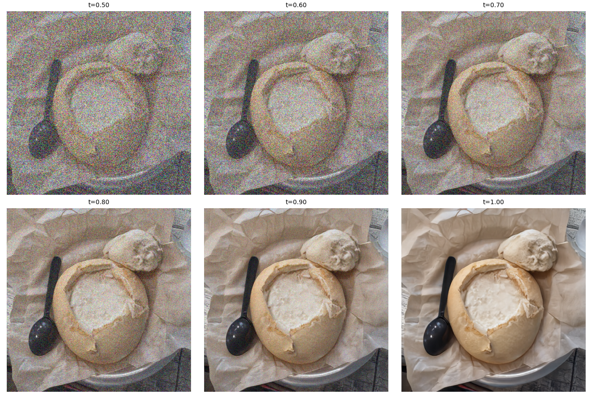
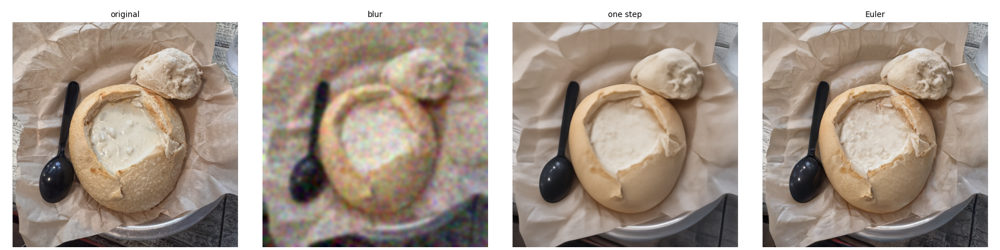
1.6 Generating Images from Noise
We generate images from noise by starting at a t of 0, and having x_start just be random noise. When we see the 5 results of a high quality photo, we tend to get a very particular type of face, seen below, although different seeds produce slightly different results.

2.1 Classifier-Free Guidance
Classifier-free guidance gives us a better overall velocity by taking the difference of the conditional and unconditional velocities, scaling by some constant w, and adding to the conditional velocity. These results are below; these photos are substantially more high-quality, polished, and consistent—they all seem to be headshots / professional-like photos. The other images, without guidance, had considerable defects.

3.1 Image-to-Image Editing
For the image editing, we interpolate what a noisy image would look like at a given timestep, and ask the model to fill it in with the conditional text prompt of a high quality photo. Generally, as the noise decreases (starting time increases), the model recovers more of the original image. Otherwise, it tends to just keep the general structure but generate new output (like the round Campanile).
I do this with my bowl of chowder, which with high noise, thinks is a face (likely because of the circular bread bowl and colors). In the mid-range, it recognizes the chowder but produces an unrealistic, polished image. Only at t=0.5 does the image look realistic.
I also do this with a sunset photo, which it also thinks is a face at t = 0.02, before it starts recovering the image. Interestingly, in the mid-levels of noise, it thinks the rocks near the water are a balcony—and generates an image as such. Only at t=0.25 does it start looking very faithful to the original image.

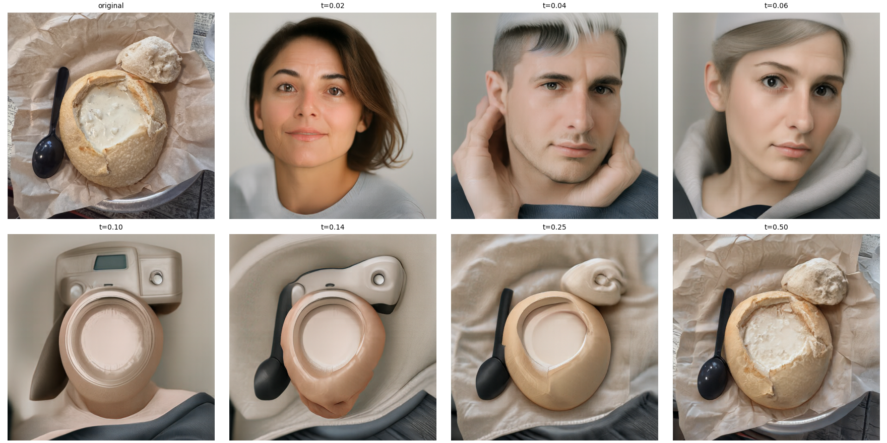
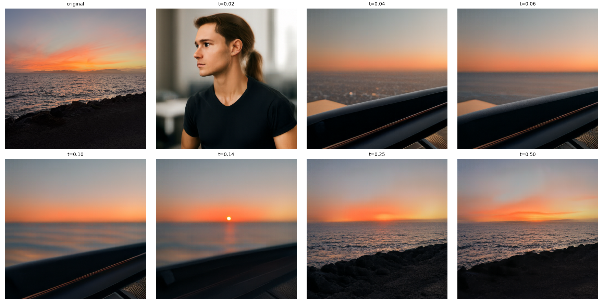
Editing Hand-Drawn and Web Images
For the Internet hand-drawn image, I use a sketch of Calvin and Hobbes. From t = 0.02 to t = 0.14, it really struggles with the image. At t = 0.02, we get a face. From t = 0.04 to 0.06, we get a malformed shoe. For the next two t values, it tries to unify all aspects of the image into one person contorting or lying down, before finally starting to recover at t = 0.25.
For my drawn images, I made doodles of Santa and a present. In both, we see similar trends: the drawing is essentially well-recovered at t = 0.25. At t = 0.10, there starts to be a sense of what the image is, but it still has defects. Before that, the model doesn’t have a good sense of what to interpolate; we get a face at t = 0.02 (a common trend for this model) for Santa, and a plain box for the present. Interestingly, the colors for the present are recovered as early as t = 0.06.
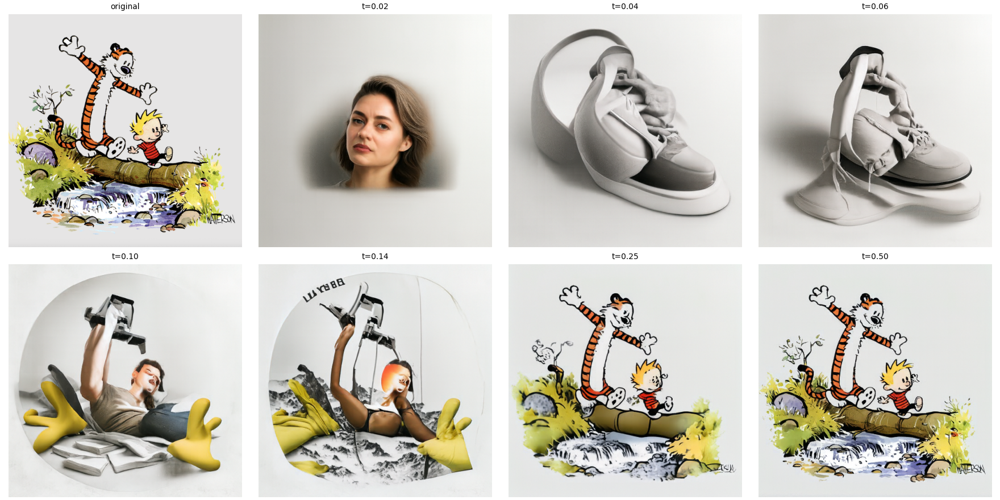
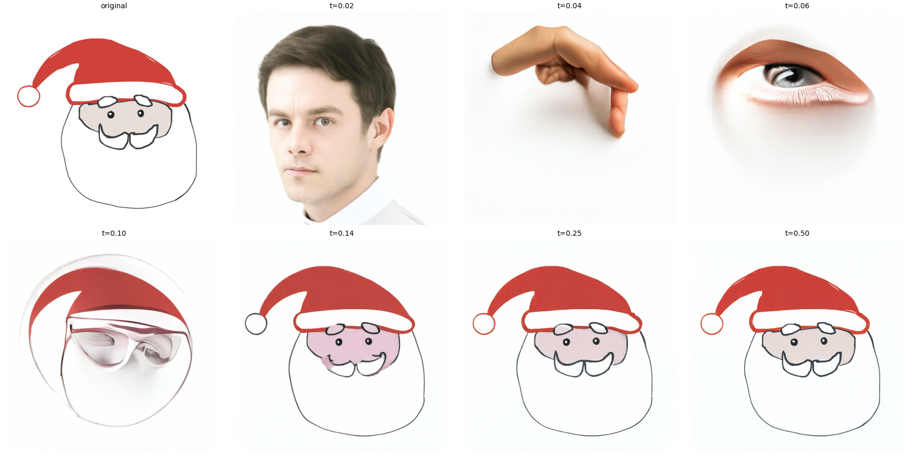
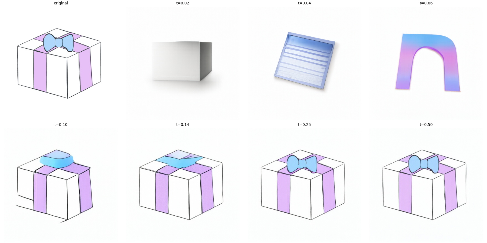
3.2 Text-Guided Image Editing
For the text-guided image editing, I transform:
- the Campanile into “an urban skyscraper”
- the bowl of chowder into “a feast with hearty soup and assorted items”
- the sunset into “sunset with skyline in the background”
At t = 0.50, this has little effect; all three images look essentially like the original ones. At t = 0.02, this has an enormous effect; the colors and overall structure of each image is preserved (the sky for the campanile, center bowl placement for the chowder, and colors for the sunset), but everything else is changed. We get interesting edits throughout; the best ones range from t = 0.06 to t = 0.14.
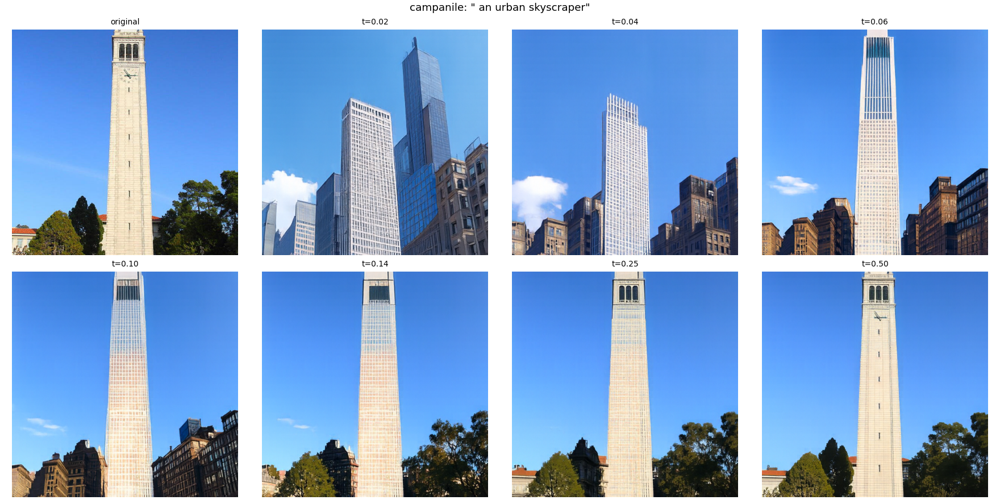
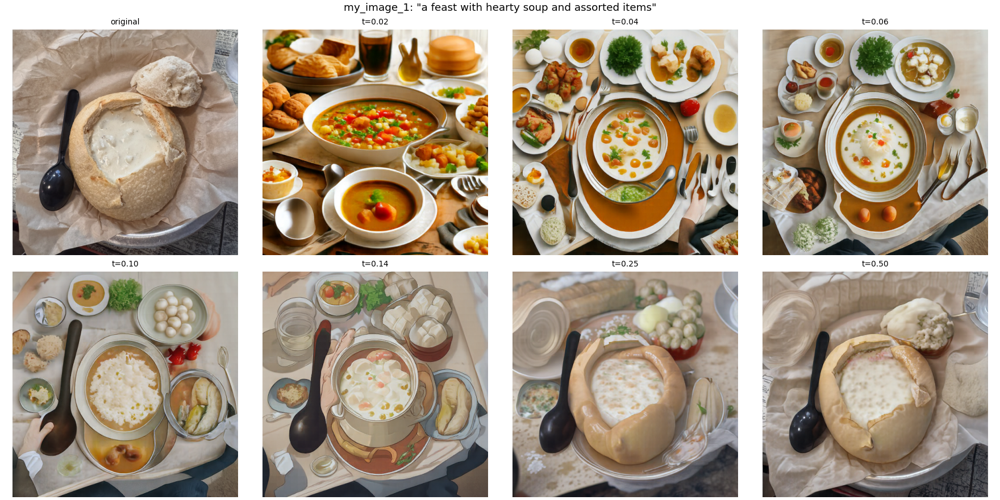
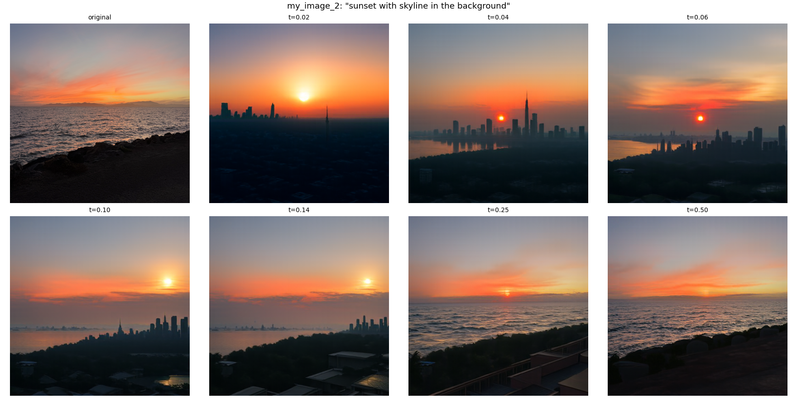
3.3 Visual Anagrams
For the visual anagrams, we compute an averaged velocity. We take the CFG velocity for the first prompt as v_1. Separately, for the second prompt, we flip the image at timestep t before computing the CFG velocity, and then flip the returned velocity. This essentially allows us to have the image look like the second prompt when flipped upside down.
The two anagrams are below. We have a rabbit/frog (fwabbit), and a forest/skyscraper (fryscraper).
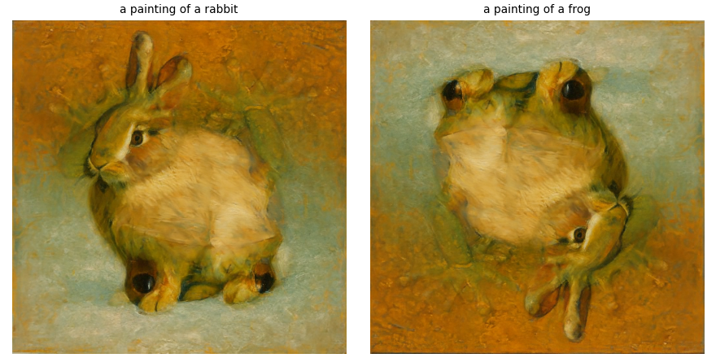
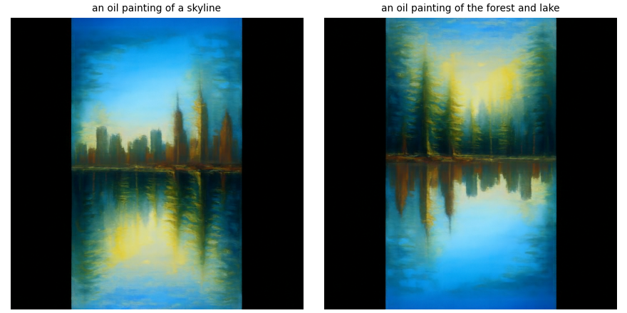
3.4 Hybrid Images
In hybrid images, we compute both CFG velocities for both prompts, before applying a lowpass filter to one velocity and a highpass filter for another (as just the velocity − lowpass(velocity)). We use the default kernel of size 265, sigma 16. I create two images, one of a fall feast that looks like a squirrel from afar, and a bouquet that looks like an ostrich from afar.
Part B
Flow matching from scratch, on MNIST.
1.2 Training a Single-Step Denoising UNet
In Part 1, we train a single-step denoising UNet and optimize over an L2 image loss. We want our model to recover the cleaned image based on a noisy version; thus we first sweep over a set of “noise weights” σ, where our noisy image is the original image + σ * noise, and the noise is sampled from the standard normal. For three digits (5, 0, 4), we visualize across a sweep of noise weights.
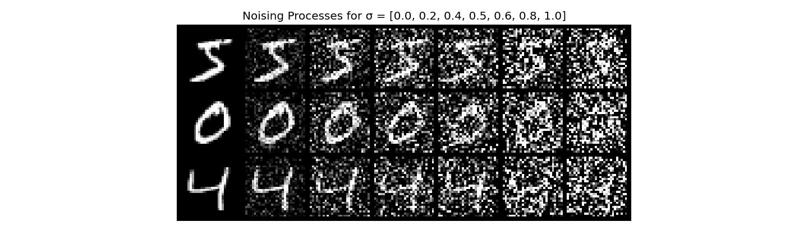
1.2.1 Training
We then train our model, and choose a noise weight of 0.5. Our training loss curve shows relatively stable training; the mean squared error decreases quickly within the first 100 optimizer steps and then slowly converges. We use the recommended hyperparameters: a hidden dimension of 128, a learning rate of 1e-4 (with Adam optimizer), a batch size of 256, and 5 epochs of training. We see that the model does relatively well even after epoch 1, but whatever blemishes exist in and around the digits are largely gone by epoch 5.
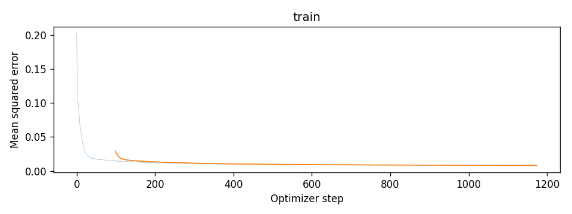
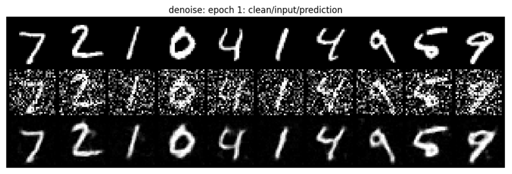
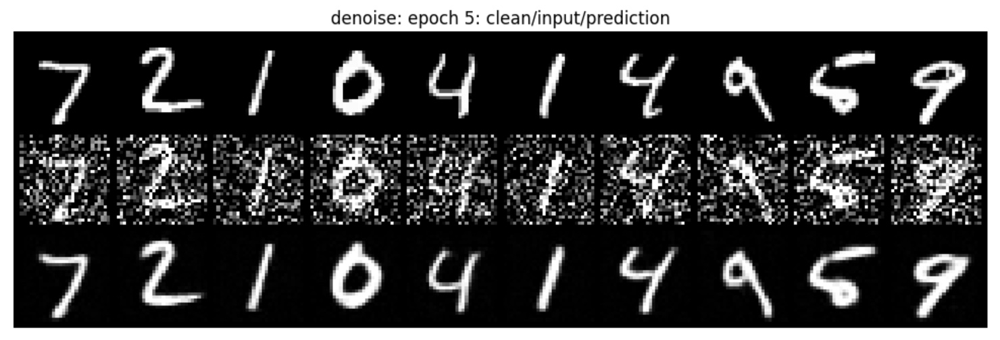
1.2.2 Out-of-Distribution Testing
We can also test model performance across the varying levels of noise: σ = [0.0, 0.2, 0.4, 0.5, 0.6, 0.8, 1.0]. In the visualization below, each row corresponds to the input we give to our denoising model. Rows represent the noise level (in increasing order) and columns represent a given datapoint / digit.
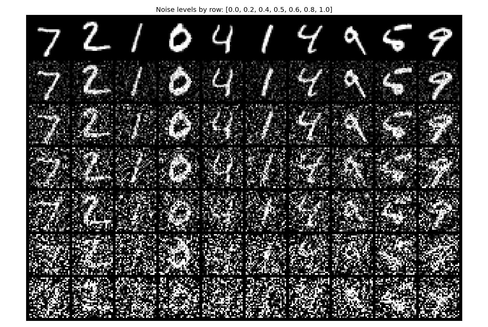
Now, in each row, we can look at the denoised output. We see that the finalized model’s performance starts to deteriorate at σ = 0.5 (it’s the first 9 that starts to have recognizable blemishes). It then progressively gets worse, and at σ = 0.8, the outputs are far too noisy.
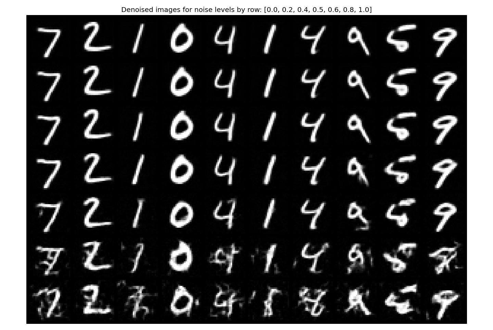
1.2.3 Denoising Pure Noise
Now, we train a UNet to denoise from pure, random Gaussian noise sampled from the standard normal.
Training remains stable, although we see a lot more variation than before. This makes sense, as our outputs from pure noise are likely to have a higher MSE than when we started from the image with some noise.
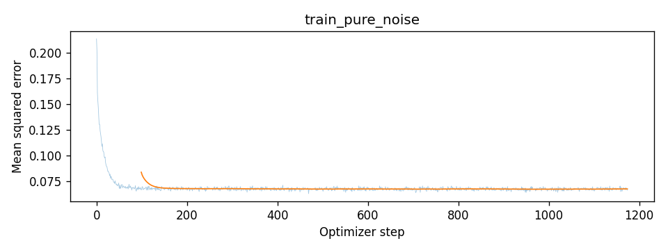
The generated outputs are consistently the same; namely, they all resemble some “average” of the images/digits. With an MSE loss, we are minimizing the sum of squared distances—so without any type of conditioning—the best we can do, or the minimum we converge on, will just be the average of our training datapoints. This is reflected in the generated outputs.
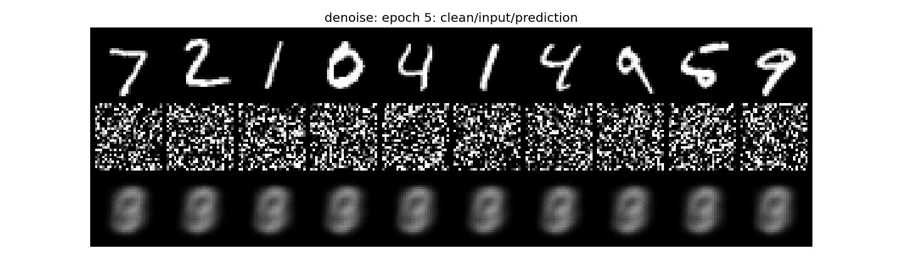
2.1–2.3 Time Conditioning
In Part 2, we add various types of conditioning to our model so we can do flow matching—as one-step denoising is not enough.
We first condition on time by adding a fully-connected block into the “upsampling” half of the U-Net. Each fully-connected block is 2 linear layers with a GELU, and takes t as an input. In the unflatten step, we multiply by the result of the first fully connected block before concatenating with the equivalent “down” step and upsampling. We then multiply this result by the second fully connected block before continuing the process as normal.
We now use a different set of hyperparameters: batch size of 64, hidden dimension of 64, and 10 epochs of training. Our learning rate starts at 1e-2, and we include an exponential learning rate decay scheduler.
We train to recover velocity, or the change from x_0 to x_1, given x_t. We see stable training; some peaks and valleys across optimizer steps, but nothing out of the ordinary.
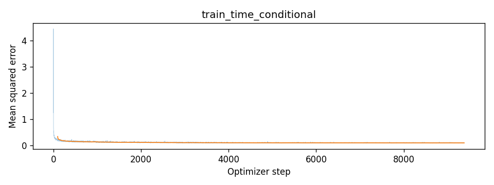
To recover outputs, we initialize some random noise, and then implement a similar algorithm to the Euler sampling above. For each timestep, we receive the predicted velocity from the model, and then add that to our image at timestep t, weighted by our step size / dt. We take care of timestep normalization by ensuring that during training, all timesteps are generated uniformly at random from 0 to 1.
In epoch 1, our outputs are unintelligible. By epoch 5, most digits are somewhat recognizable, although defects persist. We improve even more by epoch 10, but substantial noise and inconsistencies remain. Training continues to be relatively stable.
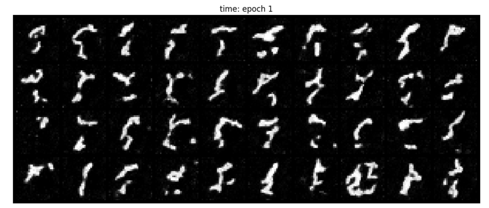
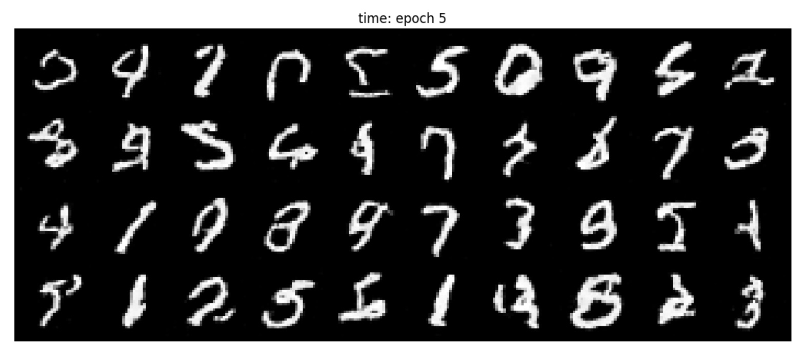
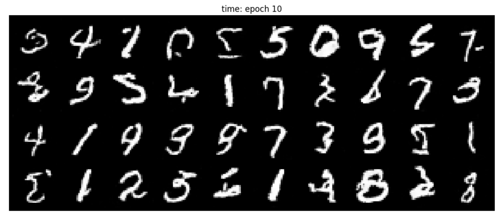
I modify the skeleton code slightly to allow us to do inference on a batch of images together, by extending our sample methods to take in parameter num_images.
2.4–2.5 Class Conditioning
To add class conditioning, we add two more fully-connected blocks. In the time-conditioned case, these blocks took in a scalar time t; here, we ensure they take in a one-hot vector (of dimensionality num_classes = 10). We also add dropout by uniformly sampling (from 0 to 1) a mask that is the same size of our conditioning vector, and zeroing out all values below our dropout threshold, which is the chance that for a given input, we do unconditional denoising. Thus the UNet is able to learn both conditional and unconditional denoising, which will be helpful for classifier free guidance.
These fully-connected blocks are incorporated per the project spec. In the first unflatten layer, we multiply by the class fully-connected block and add the time to the fully-connected block. Then we do the necessary concatenations and upsamples before repeating the same procedure with the second set of fully-connected blocks.
Training remains the same, we see that it’s relatively stable.
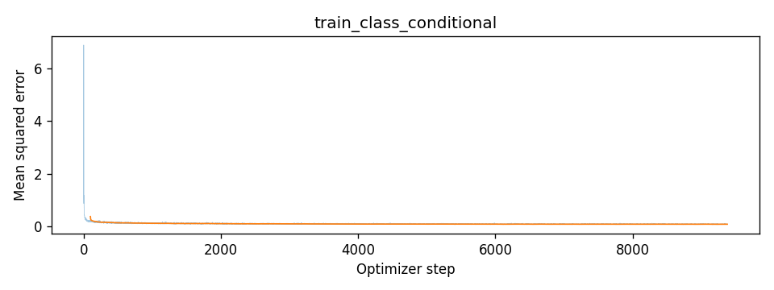
2.6 Sampling from the Class-Conditioned UNet
To sample from the U-Net, we use class-conditioning and classifier-free guidance. We take the difference of the predicted conditional vector and unconditional vectors, weighted by a scalar gamma (in this case 5), and add it to the predicted unconditional vector (per Algorithm 4, note this is different from A). In the visualizations below, we start from random noise and condition on 0 through 9. We see that even at epoch 1, the model is able to generate numbers with the correct general structure, although defects persist. By epoch 5, most numbers are close to perfect, save for a few defects. They marginally improve in sharpness and overall quality by epoch 10.
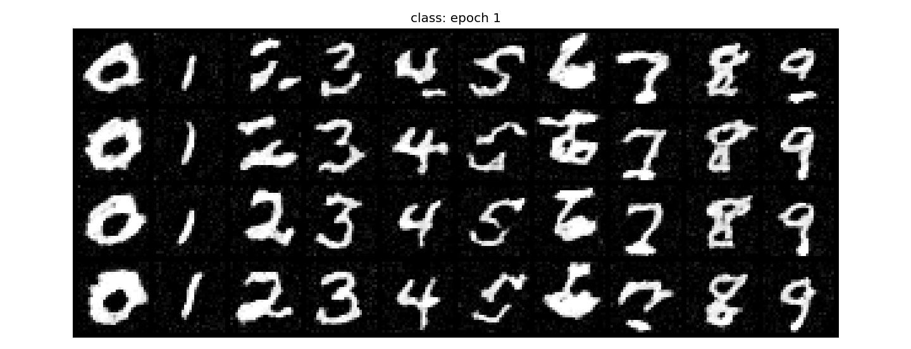
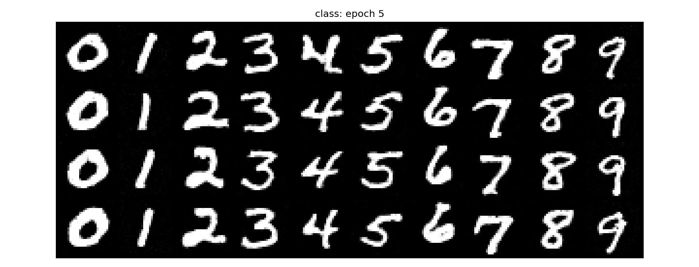
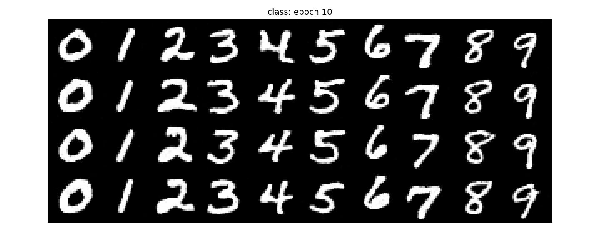
Removing the learning rate scheduler
We try to remove the learning rate scheduler. When we do so, because of the high initial learning rate, performance seems to deteriorate; while the training loss curve still shows us converging, we are likely not getting to as good of a minimum on the loss surface as before. If we compare per-epoch outputs to the original class-conditioned model, we see noticeably worse output (this is especially stark for the 8s, where this model consistently has gaps in the number, even at epoch 8).
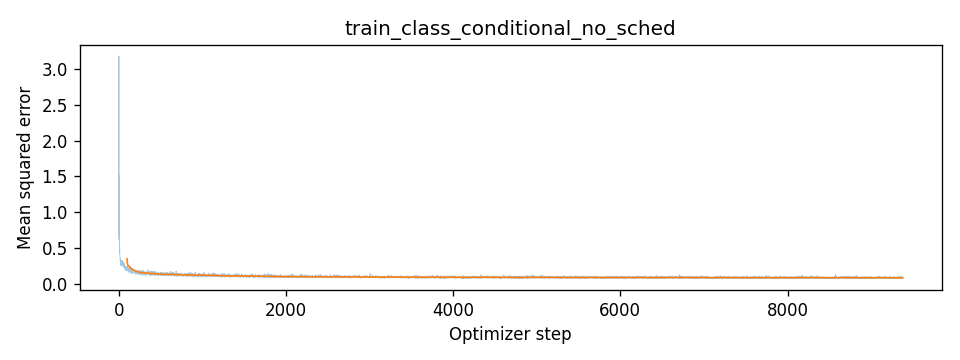
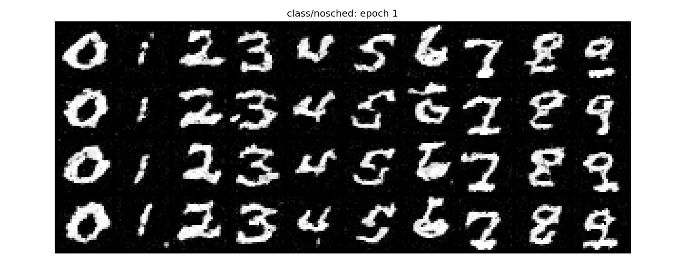
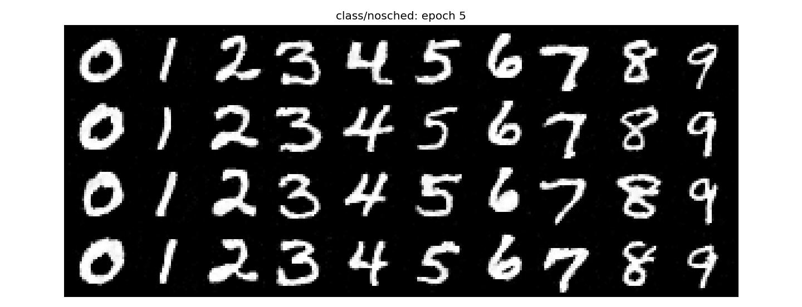
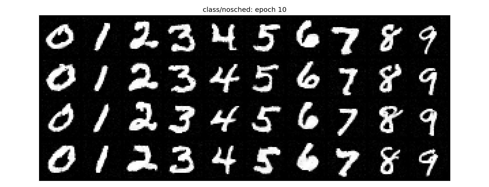
So to remedy this, we train a better model where the learning rate is lower (1e-3), but we don’t have a scheduler. This seems to have better quality outputs, shown below.
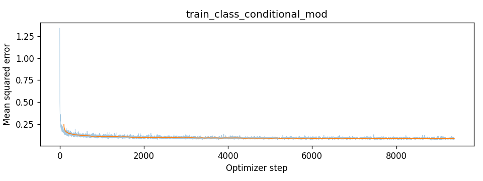
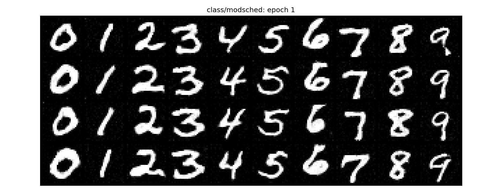
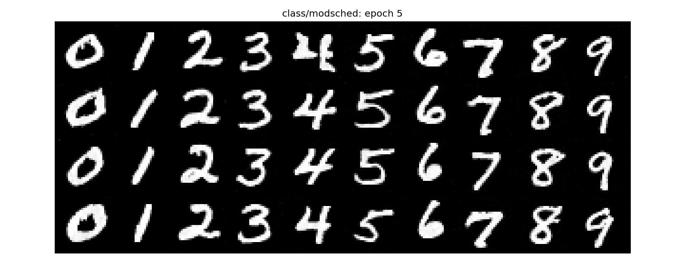
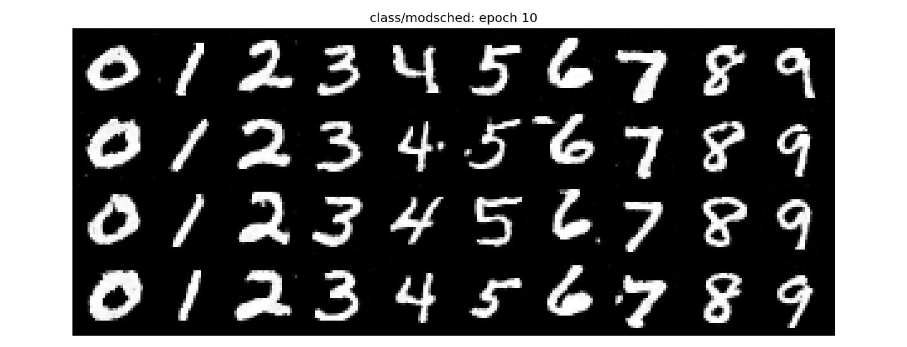